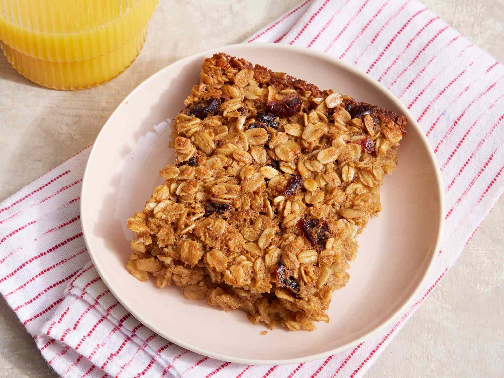

Baked Oatmeal
Home

This is a delicious and healthy breakfast option that's perfect for any time of day.
It's packed with oats, fruits, and nuts, making it a great source of fiber and protein.
Ingredients:
- 2 cups rolled oats
- 1/2 cup brown sugar
- 1 teaspoon baking powder
- 1/2 teaspoon salt
- 1 teaspoon cinnamon
- 1/2 cup chopped nuts (optional)
- 1/2 cup dried fruit (optional)
- 2 cups milk
- 2 eggs
- 1 teaspoon vanilla extract
Steps:
- Preheat oven to 350°F (175°C).
- In a large bowl, mix together oats, brown sugar, baking powder, salt, cinnamon, nuts, and dried fruit.
- In another bowl, whisk together milk, eggs, and vanilla extract.
- Pour the wet ingredients into the dry ingredients and stir until well combined.
- Pour the mixture into a greased 9x13 inch baking dish.
- Bake for 35-40 minutes or until the top is golden brown and a toothpick inserted into the center comes out clean.